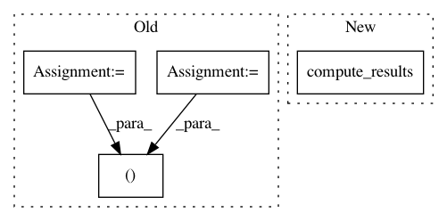

6fcfe692266cb685d19cef170a310fe14e414636,tests/evaluate_configurations.py,,run_single_configuration,#Any#Any#Any#,59
Before Change
def run_single_configuration(estimator, simulator, n_observations):
gof = GoodnessOfFit(estimator=estimator, probabilistic_model=simulator, n_observations=n_observations)
ks, p = gof.kolmogorov_smirnov_2sample(parallelized=False) // prevent nested parallel for-loops
kl = gof.kl_divergence()
return ks, p, kl
After Change
def run_single_configuration(estimator, simulator, n_observations):
print(estimator, simulator)
gof = GoodnessOfFit(estimator=estimator, probabilistic_model=simulator, n_observations=n_observations)
return gof.compute_results()
def output_results(results, dump_dir=None, export_pickle=False, export_csv=False):
columns = ["estimator", "simulator", "n_observations", "ndim_x", "ndim_y", "n_centers", "mean_ks_stat", "mean_ks_pval", "mean_kl", "time_to_fit",
In pattern: SUPERPATTERN
Frequency: 3
Non-data size: 4
Instances
Project Name: freelunchtheorem/Conditional_Density_Estimation
Commit Name: 6fcfe692266cb685d19cef170a310fe14e414636
Time: 2018-01-19
Author: f4bio.ferreira@gmail.com
File Name: tests/evaluate_configurations.py
Class Name:
Method Name: run_single_configuration
Project Name: freelunchtheorem/Conditional_Density_Estimation
Commit Name: 08227bd5e8fe37c8eb9381a61bb64ab290bb8ed0
Time: 2018-01-19
Author: jonas.rothfuss@gmx.de
File Name: tests/evaluation_tests.py
Class Name: TestGoodnessOfFitTests
Method Name: test_gaussian_dummy_kolmogorov_cdf_1
Project Name: freelunchtheorem/Conditional_Density_Estimation
Commit Name: 08227bd5e8fe37c8eb9381a61bb64ab290bb8ed0
Time: 2018-01-19
Author: jonas.rothfuss@gmx.de
File Name: tests/evaluation_tests.py
Class Name: TestGoodnessOfFitTests
Method Name: test_gaussian_dummy_kolmogorov_cdf_2